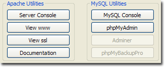
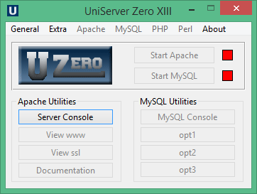

|
|
Server Utilities |
UniController has menu sections titled Apache Utilities and MySQL Utilities which provide useful features, such as single button access to phpMyAdmin and server documentation.
|  |
The image on the right shows the available menu options.
If a menu button is greyed out, it means that that option is currently unavailable. This can be for a number of reasons, such as that a related server (or servers) is not running or the appropriate plugin has not been installed.
Utility option buttons (opt1-opt3)
|
Utility option buttons (opt1-opt3) are initially unassigned, controller only no modules installed. However all MySQL support modules have been initially pre-assigned to these buttons you can change their assignment and button text however it is recommended you keep the pre-assignments.
|
 |
Parameter btntext allows you to set the button text to display. Parameter page allows you to define a page (and paramters) to run when the button is clicked.
Server Console
The Server Console opens a command window with environment variables preset and paths configured for Uniform Server utilities. Apart from cosmetics, it is identical to a standard command window (cmd).
Note: Full server console details; see Server Console page
View www
View www is a pre-configured button to display the root folder index page in the default/portable browser. It is equivalent to typing the following into a browsers address bar:
- url=http://localhost:80/"- General format
- url=http://localhost/" - When using the standard port (80) the port is not included this is automatically added by browser.
Apache searches for an index page in the following order:
index.html index.shtml index.html.var index.htm index.php3 index.php index.pl index.cgi
Displays the first index page it finds. If an index page is not found a directory (folder) listing is produced.
The list of indexes is defined in the Apache configuration file httpd.conf using directive DirectoryIndex
Note: Substitute the domain name (localhost) and port (80) as appropriate for the values configured.
View ssl
View ssl is a pre-configured button to display the root folder index page in the default/portable browser. It is equivalent to typing the following into a browsers address bar:
- url=https://localhost:443/" - General format
- url=https://localhost/" - When using the standard port (443) the port is not included this is automatically added by browser.
Apache searches for an index page in the following order:
index.html index.shtml index.html.var index.htm index.php3 index.php index.pl index.cgi
Displays the first index page it finds. If an index page is not found a directory (folder) listing is produced.
The list of indexes is defined in the Apache configuration file httpd.conf using directive DirectoryIndex
Note: Substitute the domain name (localhost) and port (443) as appropriate for the values configured.
Documentation
The Documentation button opens the index.html page from which the pages you are reading can be accessed. It follows the structure of the UniController menus. The top level describes commonly used functionality while sub-menus detail the next level of functionality and provide more detailed information. It is self-contained, requiring no external references. This notwithstanding, there is quite a bit of additional information available at The Uniform Server's Wiki site wiki.uniformserver.com
MySQL Console
The MySQL utility is a very popular admin tool; Uniform Server Zero XIII provides a dedicated menu button (MySQL Console) that directly runs this utility in a console window, commonly refered to as the MySQL prompt. From this window the MySQL server can be administered.
Note: Full MySQL console details; see MySQL Console page
phpMyAdmin
phpMyAdmin is a MySQL admininstration tool written in PHP. It allows you to perform tasks such as creating, modifying or deleting databases. You can execute SQL statements and manage users and their permissions.
The phpMyAdmin menu button opens the phpMyAdmin index page in the default/portable browser.
- url=http://localhost:80/us_opt1/index.php"
Note 1: phpMyAdmin access. By default is accessible only to localhost.
Note 2: The port (80) is substituted as appropriate for the value configured.
Note 3: phpMyAdmin is an alternative to Adminer; which has a smaller foot-print.
Adminer
Adminer is a MySQL admininstration tool written in PHP. It allows you to perform tasks such as creating, modifying or deleting databases. You can execute SQL statements and manage users and their permissions.
The Adminer menu button opens the Adminer index page in the default/portable browser.
- url=http://localhost:80/us_opt2/index.php"
Note 1: Adminer access. By default is accessible only to localhost.
Note 2: The port (80) is substituted as appropriate for the value configured.
Note 3: Adminer with its smaller foot-print is an alternative to phpMyAdmin.
phpMyBackupPro
Although the above two admininstration tools allow you to export database data as an SQL query, a dedicated MySQL backup tool may be preferable such as phpMyBackupPro.
phpMyBackupPro is a MySQL admininstration tool written in PHP. It allows you to quickly perform database backups. You can create scheduled backups, manage and restore them, download or email them.
Installation:
- Download required plugin installation file ZeroXIII_phpmybackuppro_2_4.exe
- Save to folder UniServerZ.
- To install double click on ZeroXIII_phpmybackuppro_2_4.exe
The phpMyBackupPro menu button opens the phpMyBackupPro index page in the default/portable browser.
- url=http://localhost:80/us_opt3/index.php"
Note 1: phpMyBackupPro access. By default is accessible only to localhost.
Note 2: The port (80) is substituted as appropriate for the value configured.
Sypex Dumper - Alterntive to phpMyBackupPro
Sypex Dumper is an open source web application for creating and restoring MySQL database backups. The application can work with huge (gigabytes) databases. This is acheived by bypassing the PHP timeout limits using a method that pauses and re-starts the backup job.
The Uniform Server Zero Sypex Dumper plugin has been configured for automatic login as admin user and is fully portable.
Installation:
- Download required plugin installation file Zero_sypex_dumper_2_0_10.exe
- Save to folder UniServerZ.
- To install double click on Zero_sypex_dumper_2_0_10.exe
Note
The Sypex Dumper menu button opens the Sypex Dumper index page in the default/portable browser.
- url=http://localhost:80/us_opt3/index.php"